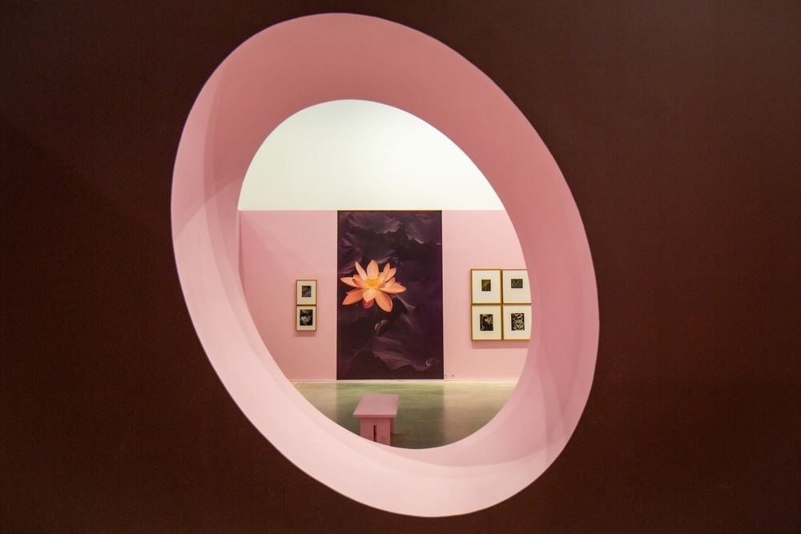

Festivals · Arts
Rencontres d'Arles 2027
- Dates
- –
- Location
- Arles, France
- Format
- In-person
- Category
- Arts
- Industry
- Photography festival
- Organiser
- Rencontres d'Arles
- Official website
- https://www.rencontres-arles.com/en
About
Official closing announcement for the 2026 edition stated 163,000 visitors (previous edition, not used as 2027 expected attendance). Official 2027 opening week is 5–11 July, with exhibitions 5 July–3 October. Dates are local to the host city (Central European Time, UTC+1 / UTC+2 in summer).
Topics: photography, contemporary art, exhibitions.
No organiser attendance figure found on the official pages fetched 24 Nov 2026. Ranked by our estimated size tier 'very large' (100,000+ attendees/visits), a judgement from format, venue and scale, not an official number.